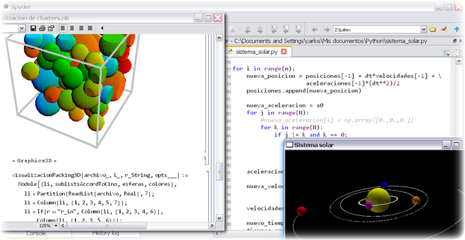

Proyectos¶
La mayoría de mi trabajo ha estado orientado hacia la programación y el desarrollo de software, porque creo firmemente en que el futuro de la ciencia reside en la creación de nuevos y cada vez más potentes modelos computacionales.
A lo largo de mi carrera profesional he trabajado principalmente en lenguajes de alto nivel, como Python y Mathematica, pues considero que están mejor capacitados para realizar el tipo de programación exploratoria a la que se enfrentan los científicos en su trabajo, y que involucra: bosquejar rápidamente un modelo, procesar y graficar datos experimentales, compararlos con el modelo y repetir el ciclo.
De los lenguajes que comúnmente se usan en computación científica (e.g. Fortran o C), sólo he utilizado C++, porque la velocidad de cómputo era de suma importancia.